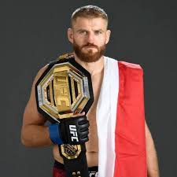
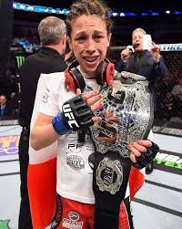
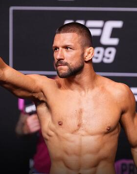

Polacy w UFC
W UFC występowało kilku znanych polskich zawodników, którzy zdobyli światowe uznanie. Wśród nich Jan Błachowicz, były mistrz kategorii półciężkiej, oraz Joanna Jędrzejczyk, była mistrzyni w kategorii słomkowej. Polska scena MMA dynamicznie się rozwija, a coraz więcej polskich zawodników ma szansę rywalizować na najwyższym poziomie.
Jan Błachowicz - Król kategorii półciężkiej
Jan Błachowicz to jeden z najbardziej znanych polskich zawodników MMA. Jego kariera w UFC rozpoczęła się w 2014 roku, a dzięki swojej determinacji i ciężkiej pracy zdobył pas mistrza w kategorii półciężkiej w 2020 roku. Błachowicz jest znany z potężnej siły, precyzyjnych ciosów oraz niebywałej odporności. Jego zwycięstwo nad Dominickiem Reyesem, które przyniosło mu tytuł mistrza, było historycznym momentem dla polskiego MMA.
Joanna Jędrzejczyk - Pionierka kobiecego MMA
Joanna Jędrzejczyk była jedną z pierwszych kobiet w UFC, które zdominowały swoją dywizję. Zadebiutowała w UFC w 2014 roku, a już rok później zdobyła tytuł mistrzyni w kategorii słomkowej, stając się jedną z najlepszych zawodniczek w historii tej dywizji. Jędrzejczyk broniła tytułu pięć razy, prezentując wyjątkowe umiejętności w stójce, przede wszystkim w kickboxingu i muay thai. Dzięki swojej charyzmie i umiejętnościom stała się jedną z największych gwiazd kobiecego MMA.
Michał Oleksiejczuk - Nowa generacja polskich talentów
Michał Oleksiejczuk to kolejny utalentowany polski zawodnik, który walczy w UFC. Reprezentując kategorię półciężką, Oleksiejczuk zdobył uznanie dzięki swojej agresywnej i dynamicznej stylizacji walki. Jego spektakularne zwycięstwa przez nokaut uczyniły go jednym z zawodników, na których warto zwracać uwagę w przyszłości. Michał stale udowadnia, że Polska ma solidne zaplecze młodych i utalentowanych wojowników.
Mateusz Gamrot - Wszechstronność i technika
Mateusz Gamrot to były mistrz organizacji KSW, który przeszedł do UFC z dużymi oczekiwaniami. Jego umiejętności zarówno w stójce, jak i w parterze, czynią go wszechstronnym zawodnikiem, który ma potencjał na wielkie sukcesy w UFC. Gamrot zadebiutował w 2020 roku, a jego technika oraz zdolność adaptacji w ringu szybko przyciągnęły uwagę fanów i ekspertów. Reprezentuje kategorię lekką i z każdym pojedynkiem udowadnia, że ma wszystko, czego potrzeba, by osiągnąć szczyt.
Karolina Kowalkiewicz - Weteranka polskiego MMA
Karolina Kowalkiewicz to kolejna wybitna zawodniczka reprezentująca Polskę w UFC. Karolina walczy w kategorii słomkowej i jest jedną z pierwszych polskich kobiet, które zrobiły karierę na międzynarodowej scenie MMA. Jej pojedynek z Joanną Jędrzejczyk o mistrzowski pas na gali UFC 205 w 2016 roku to jeden z najbardziej pamiętnych momentów w historii polskiego MMA. Choć nie zdobyła tytułu, jej determinacja i serce do walki zjednały jej wielu fanów na całym świecie.
Przyszłość polskiego MMA
Polska scena MMA wciąż się rozwija, a sukcesy zawodników takich jak Jan Błachowicz, Joanna Jędrzejczyk czy Mateusz Gamrot są inspiracją dla kolejnych pokoleń. Coraz więcej polskich zawodników trafia do UFC, co świadczy o rosnącej sile i popularności tego sportu w Polsce. Dzięki pasji, determinacji i ciężkiej pracy możemy spodziewać się, że kolejni polscy zawodnicy będą odgrywać kluczowe role w przyszłości UFC.